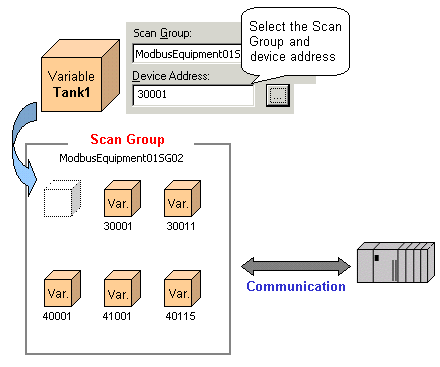
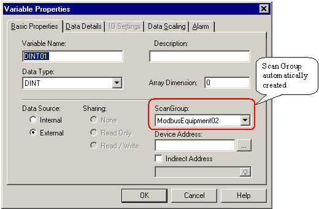
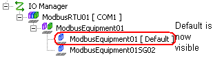

|
|
|
|
|
|
|
|
Scan groups organize communication with equipment. Variables with equipment values that are scanned at the same rate should belong to the same scan group.
There are four scanning speeds: Fast, Medium, Slow, and a user-defined speed.
For variables to communicate with the equipment, you need to define the scan group and device address.

When you create the equipment driver, a scan group is automatically created. In most cases, use this scan group when creating your variables.


The default scan group does not display as a Navigator node until you add another scan group.

You cannot delete the default scan group.
The scan rate for the default scan group is initially set to Medium.
You can change the equipment's ScanRate to fast, medium, slow, or user defined. The approximate interval to get data are as follows:
Fast: 50...250 milliseconds
Medium: 250...1000 milliseconds
Slow: 1000 milliseconds
User Defined: 2 seconds...59 minutes and 59 seconds
In addition to the default scan group, you can add other scan groups. Multiple scan groups become necessary when there are too many variables scanning at a fast scan rate, causing too high a communication load and scan rates to decline.
To avoid this situation, set up a scan group with ScanRate set to Medium, Slow, or User Defined, then assign all non-essential variables to this scan group.
Organize your scan groups so that only required variables are set up with that fast scan rate.
The following diagram demonstrates how to set up your scan groups.

Right-click the equipment driver node and click New Scan Group.
A Scan Group node is added below the Equipment node. The Scan Group node marked Default is the scan group that is generated when adding a driver.
Define the scan group properties.
|
Group |
Properties |
|
Name |
The default name is based on the equipment name. When you add a scan group, the name is in the format: <name><scangroup><number>. Names must be unique within the target and less than 32 characters long. |
|
ScanRate |
Defines how often changes in data on the equipment are updated to Vijeo Designer Runtime. There are four scanning speeds, Fast, Medium, Slow, and User Defined. The default is set to Medium.
|
|
Interval (MM:SS) |
This property is available only when User Defined is selected as the scan rate. Enter the interval in time format (MM:SS) within the valid range of 00:02 and 59:59. |
Add as many scan groups as required by your system.

Create your variables and organize them into scan groups.


Variables imported from SoMachine Symbol Configuration are automatically assigned to a single scan group for each PLC and cannot be assigned to newly added scan groups. However, users can create new external variables that can be assigned to different SoMachine scan groups.
1. Create a new external variable.
2. Select a SoMachine ScanGroup and manually assign the SoMachine Device Address using the following schema: <devicename>.Application.<POUname>.<variablename>
You can delete scan groups in the Navigator window.
Right-click the Scan Group node that you want to remove, and then click Delete.
After you delete a scan group, any variables that were assigned to it will need to be manually reassigned to another scan group. You can check the reassigned variable's new scan group by double-clicking the variable.
In the following example, DINT01 was assigned to Scan Group ModbusEquipment01SG02.


Any other variables that were assigned to the same scan group will also be reassigned to another scan group.

If you delete either a Driver or Equipment node, any scan groups in the node are also deleted. Therefore, after deleting Driver and Equipment nodes, you should check the scan group settings for the variables. See Section 5.2.3, Deleting or Modifying Drivers.